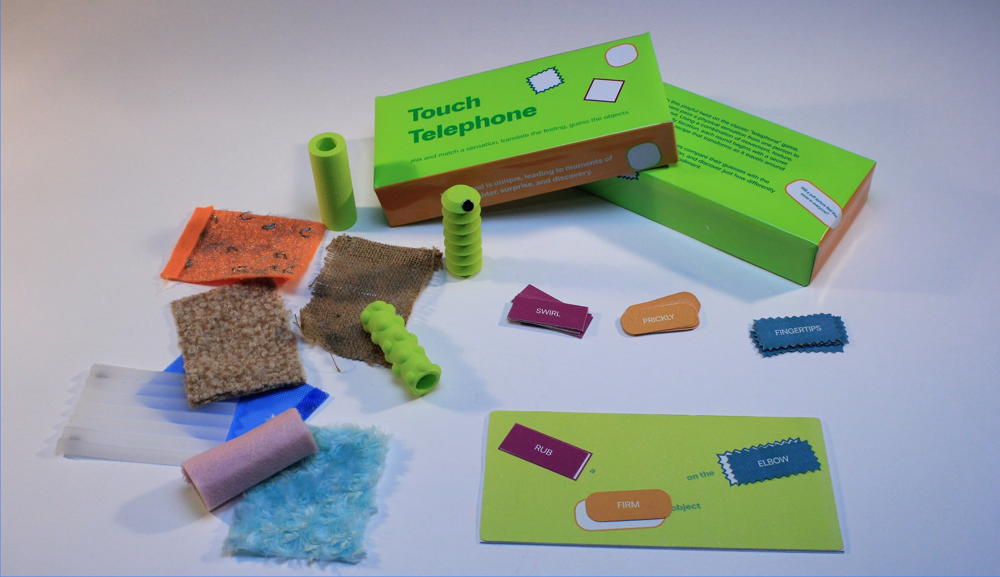
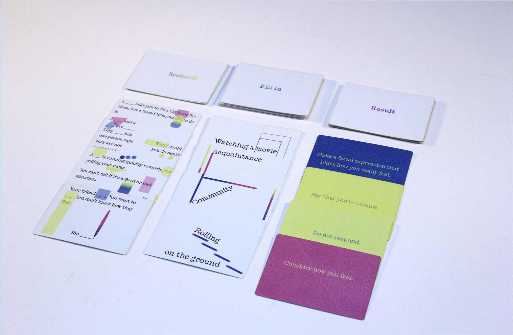
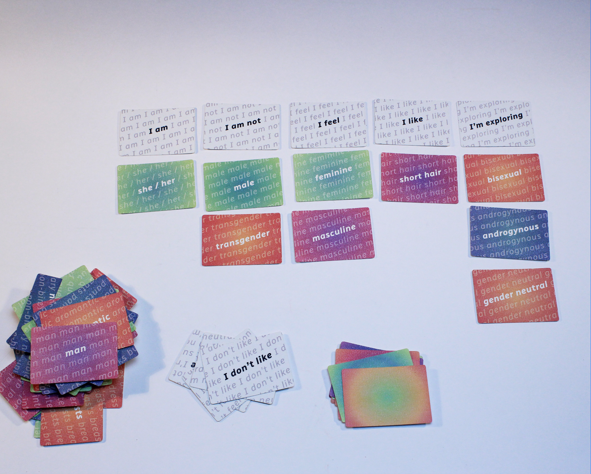
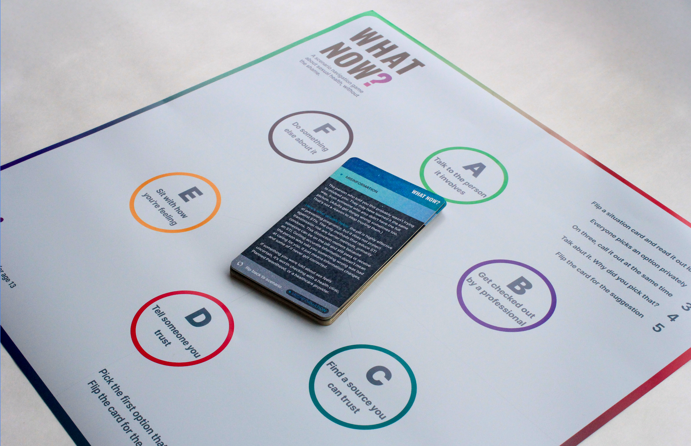
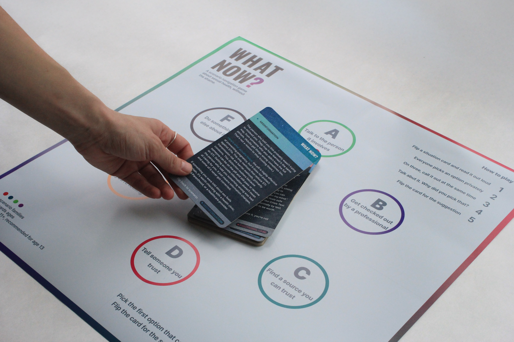
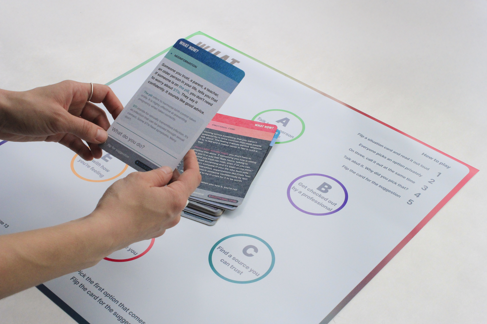

| 00:00:00 AM
what now?
product research conceptualSex education in the United States is built around risk, shame, and omission. This is a design response to that.
What Now? is part of Reframing Sex Ed, a project on what happens when you treat sexual health education
as a design problem. Four games built around playable cards, foldable boards, facilitator guides, and
physical artifacts. The format is familiar. The content is what's usually missing.
The collection was developed by a team of four MID candidates at RISD, working holistically across all
four games: peer reviewing, playtesting, and iterating on each other's work throughout the process.
What Now? is my individual contribution within it.

Touch Telephone, F. Grace-Castonguay

The Consent Game, H. Yeh

Today I am, L. Ilvento

What Now?, E. Ayuso Rizzo
Sex education in the United States has historically been built around risk, shame, and omission. What
not to do, what can go wrong, and which entire categories of people and experiences simply don't exist
in the curriculum. The result is generations of young people navigating real situations with inadequate
information, internalized shame, and no language for what they're actually experiencing. The project
starts from the position that this is a design problem as much as a policy one.
Games were the right format because they create conditions rather than deliver content. They lower the
barrier, give social permission to say something out loud, to disagree, to not know, to laugh at
something uncomfortable. A game doesn't lecture. What happens inside it depends on the people at the
table.
What Now?
The fourth game in the collection.

What Now? is the fourth game in the collection and the one most directly concerned with the gap between
what young people are taught and what they actually encounter. It presents players with real scenarios:
receiving news about an STI, navigating a pregnancy scare, encountering misinformation, carrying
something they haven't told anyone. It asks one question: what do you do? Not what should you do. Not
what a responsible adult would want you to do. What do you actually do, right now, with what you know
and feel and have access to. The board holds six possible responses. The card holds a suggestion. The
conversation in between is the game.
The four scenario families cover STIs, pregnancy, misinformation, and emotional care. They were chosen
because they represent the territory most consistently absent from or distorted by conventional sex
education. Risk is present in all of them but it isn't the frame. The frame is navigation. What does
it mean to take care of yourself and the people around you, in a specific situation, with real
constraints?
The language of the cards took longer than anything else. Trauma-informed, inclusive, age-appropriate,
body-neutral, accurate without being clinical, warm without being condescending. These requirements
don't resolve neatly, and every sentence in every scenario was written against guidelines developed
specifically for the project. The 12 cards here are a prototype. The full deck of 40 or more is
intended to be developed with medical professionals, psychologists, educators, and sex education
specialists. That gap between what exists and what the project requires is not an apology. It's the
argument.
see full game overview ↗
